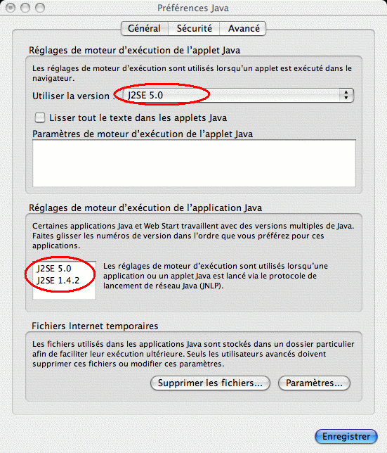

|
Mis à jour le 11/07/2006 Qu'est ce que OASIF
OASIF est un Outil d'Aide à la Scénarisation pour l'Ingénieurie de Formation. Il vise à faciliter la conception des dispositifs de formation ouverte et à distance en alliant une représentation visuelle globale du dispositif de formation à une description locale détaillée (éléments descriptifs textuels) et en permettant une manipulation simple et directe du dispositif de formation. Licence Ce logiciel est diffusé et exploité sous une licence logicielle dite "libre" telle que la License Publique Générale (GPL : General Public License), dans sa version datée du 2 juin 1991, qui est consultable sur l'url : http://www.gnu.org/copyleft/gpl.html. Configuration minimum * JRE 1.5 (Java Runtime Environnement) installé sur sa machine. * 512 Mo de RAM * 10 Mo de libre sur le disque dur. Fonctionne sur Windows XP, 2000, Linux, Mac OS X. Installation de OASIF Sous Windows : Etape 1 : Télécharger la dernière version du JRE de Sun (minimum requis version 1.5) à partir de l'adresse suivante : Etape 2 : Extraire le contenu de ce fichier compressé à l'endroit où vous souhaitez que OASIF soit installé. Etape 3 : L'installation est terminé il vous suffit de lancer le fichier OASIF pour démarrer l'application. Sous Linux : Etape 1 : Télécharger la dernière version du JRE de Sun (minimum requis version 1.5) à partir de l'adresse suivante : Etape 2 : Extraire le contenu de ce fichier compressé à l'endroit où vous souhaitez que OASIF soit installé. Sur certaines distributions l'association MIME ne se fait pas forcément pour les fichiers JAR. Définir l'association pour que les fichiers .JAR soit ouvert avec java (contenu dans le JRE précedamment installé sur la machine) : java -jar. Cas d'une version antérieur à une 1.5 précédamment installé : Si une version antérieur a été installé, il se peut que le système, malgré l'installation du dernier JRE, utilise l'ancienne version de java pour démarrer OASIF. Si tel est le cas, il faut modifier le PATH de java pour qu'il utilise la version voulu (1.5 ou plus). Etape 3 : L'installation est terminé il vous suffit de lancer le fichier OASIF pour démarrer l'application. Sous Mac OS X : Etape 1 : Il vous faut installer le J2SE pour Mac sur votre machine vous pourrez le trouvez sur le site de Apple catégorie "Support". Après installation du J2SE, allez sur votre disque à l'emplacement suivant : Cliquez ensuite sur : La fenêtre ci-dessous apparaît : Choisissez la dernière version de Java à uliser( ici J2SE 5.0).  Le système utilisera la dernière version installé sur le système pour exécuter les applications JAVA. Etape 2 : Extraire le contenu de ce fichier compressé à l'endroit où vous souhaitez que OASIF soit installé. Etape 3 : L'installation est terminé il vous suffit de lancer le fichier OASIF pour démarrer l'application. |